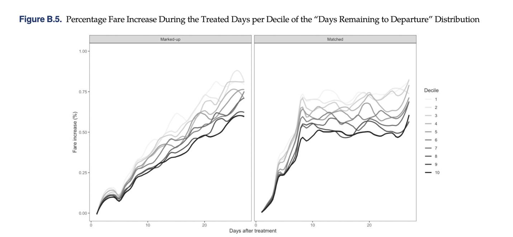
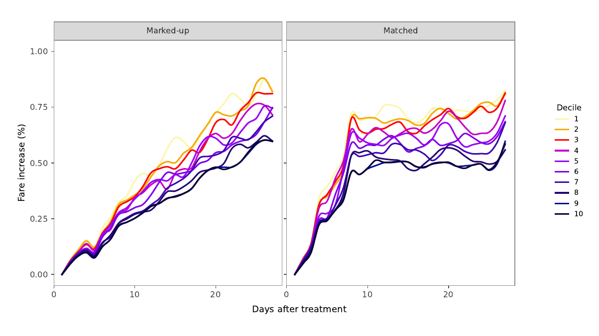
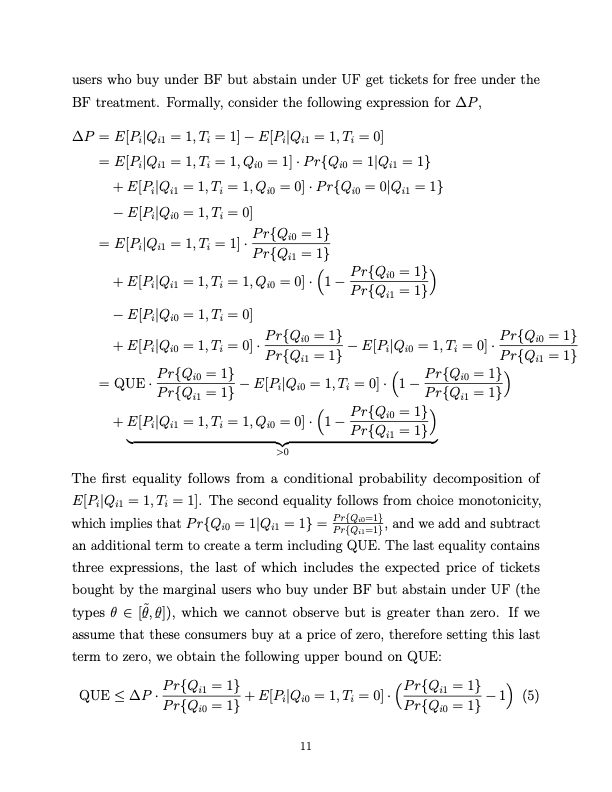
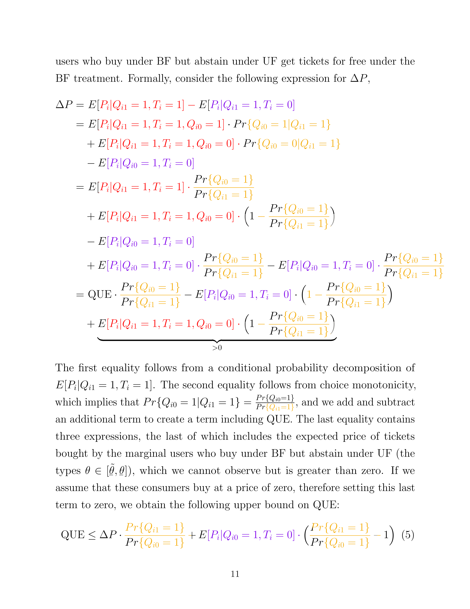
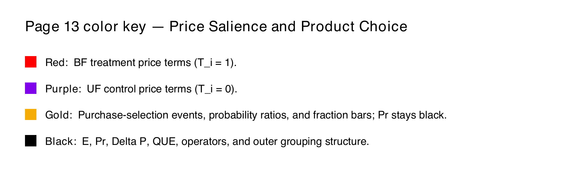

September 18, 2026
A Bifurcation in Color Palettes
There has been a bifurcation of color palettes. I’ve noticed it in the economics and operations management papers I have been reading, and in the AI-generated slop that permeates almost every other aspect of the media I consume. On the one hand, I see color palettes trending toward a grayscale theme in academia, mirroring the way cars sold in the U.S. have converged toward grayscale, although I don’t know that there ever was a vibrancy in academic papers akin to the colors of cars sold in the 1960s. I think this bifurcation is likely a response by academics to the high-contrast, hyper-stylized AI slop being generated. It is an effective way for academics and other critical thinkers to signal their authenticity (iSeeCars 2026; Kosarenko 2026; Wang, Webster, and Joyce 2025).
I think it’s ascetic and borderline masochistic.
While the grayscale color palette can look sleek if done well (see TRIA and Gwern), when presenting our ideas and thoughts to the public, we can do a better job. On the one hand, we don’t want to overplay our hand and go full HR or corporate-brained with our visualizations. I refuse to place examples of this on my website; iykyk. But I also believe it is no coincidence that two of the most successful science-communication YouTube channels, 3Blue1Brown and Kurzgesagt, use vibrant, eye-catching color palettes and 2D animations (3Blue1Brown n.d.; Kurzgesagt n.d.).
Are Lincoln and John Marshall Rolling Over in Their Graves?
Academics may argue that the quality of their work and the logic of their arguments matter most. Lincoln and John Marshall would agree. They were both famous for their dry speaking styles, which forced listeners to grapple with the logic of their arguments and not the salesmanship of their presentation (Articulation Inc. 2023; Newmyer 2000). They seemed to reach their audiences effectively.
However, the ideas we share in operations management and economics are increasingly technical and sophisticated, all while our audience isn’t necessarily becoming more educated (National Center for Education Statistics 2022a, 2022b, 2023). Even if our goal isn’t to reach the general public, countless researchers from outside our areas of expertise would benefit from the cross-pollination of ideas, and better color palettes can help facilitate this. In order to produce more graspable research, it may require slightly more effort from the scientist. Better color palettes like the ones shown below can engage and encourage the reader, and require only an ounce of creativity and effort from the scientist.
An Example
I propose the following color palette and example implementations to show that we can do a more attractive job if we sprinkle a little more color into our work. Note that this color palette is not ADA accessible; figures or charts using it would need supplemental ADA-compatible versions as well.
How did I produce this color palette? I took it from a still image of an animated video that I found visually striking. There is a suite of online tools that can turn any image into a color swatch, so you can create custom palettes that speak to you. Check out Coolors and Adobe Color for examples.
A Little Color in the Charts
Consider Figure B.5 from the appendix of Cohen et al. (2023).

Can we produce output like this that doesn’t feel AI-generated?

A Little Color in the Math
But we need not stop with graphs and charts. In many economics papers, mathematical models provide the theoretical underpinnings for the scientist’s research. Understanding the mathematical framework is usually the largest intellectual challenge of grasping economics papers. Instead of presenting readers with mathematical models like the one in Blake et al. (2021):

Let’s consider a color-coded version with an accompanying legend instead:


Works Cited
- 3Blue1Brown. n.d. “3Blue1Brown.” YouTube channel. Accessed September 18, 2026. https://www.youtube.com/channel/UCsXVk37bltHxD1rDPwtNM8Q
- Adobe. n.d. “Adobe Color.” Accessed September 18, 2026. https://color.adobe.com/
- Articulation Inc. 2023. “Speaking Tips: The Art of Concision and How to Talk Like Lincoln.” February 17, 2023. https://articulationinc.com/want-your-words-to-have-lasting-power-stop-at-2-minutes/
- Blake, Tom, Sarah Moshary, Kane Sweeney, and Steve Tadelis. 2021. “Price Salience and Product Choice.” Marketing Science 40 (4): 619–636. https://doi.org/10.1287/mksc.2020.1261
- Cohen, Maxime C., Alexandre Jacquillat, Juan Camilo Serpa, and Michael Benborhoum. 2023. “Managing Airfares under Competition: Insights from a Field Experiment.” Management Science 69 (10): 6076–6108. https://doi.org/10.1287/mnsc.2022.4656
- Coolors. n.d. “Image Picker.” Accessed September 18, 2026. https://coolors.co/image-picker
- Gwern Branwen. n.d. “Gwern.net.” Accessed September 18, 2026. https://gwern.net/
- iSeeCars. 2026. “The Most Popular Car Colors in America.” June 23, 2026. https://www.iseecars.com/most-popular-car-colors-study
- Kosarenko, Yulia. 2026. “Bright and Gory: Toxic Visual AI Slop Is Dulling Our Senses.” Business, Architected, April 26, 2026. https://medium.com/business-architected/bright-and-gory-toxic-visual-ai-slop-is-dulling-our-senses-2eb654dbd420
- Kurzgesagt. n.d. “What We Do.” Accessed September 19, 2026. https://kurzgesagt.org/what-we-do?visit=videos
- National Center for Education Statistics. 2022a. “NAEP Mathematics: National Achievement-Level Results.” The Nation’s Report Card. https://www.nationsreportcard.gov/highlights/mathematics/2022/
- National Center for Education Statistics. 2022b. “NAEP Reading: National Achievement-Level Results.” The Nation’s Report Card. https://www.nationsreportcard.gov/highlights/reading/2022/
- National Center for Education Statistics. 2023. “Long-Term Trend Assessment Results: Reading and Mathematics.” The Nation’s Report Card. https://www.nationsreportcard.gov/highlights/ltt/2023/
- Newmyer, R. Kent. 2000. “John Marshall as an American Original: Some Thoughts on Personality and Judicial Statesmanship.” Faculty Articles and Papers 308. University of Connecticut School of Law. https://digitalcommons.lib.uconn.edu/law_papers/308/
- Reilly, Patrick. 2026. Post on TRIA’s visual style. X, June 20, 2026. https://x.com/ReillyOPatrick/status/2068422182733058057
- Wang, Yujin, Mike A. Webster, and Daniel S. Joyce. 2025. “Color Statistics of Images Created by Generative AI.” Journal of the Optical Society of America A 42 (5): B76–B80. https://doi.org/10.1364/JOSAA.545030